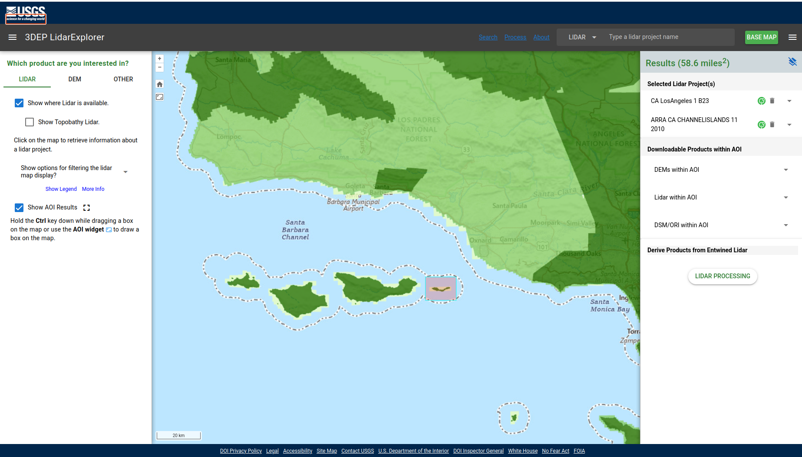
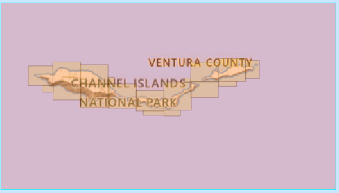
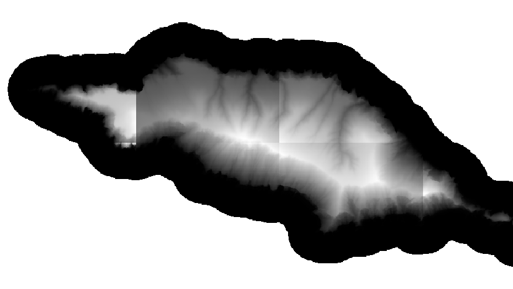
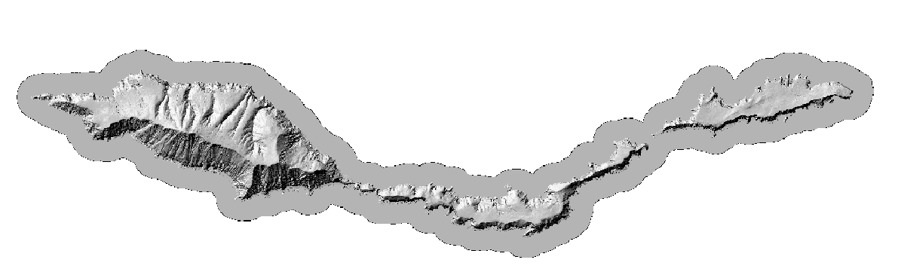

Working With DEMs
Lab 8: DEMs (part 1)
Now that we’ve learned a bit about what DEMs are and what they can be used for, let’s get some practice working with them in QGIS.
Quick file organization housekeeping:
Make a new folder inside your nr218 directory called lab_8. Inside that folder, make a data folder and a docs folder. All downloaded files will go in the data folder, and all generated outputs (more on this later) will go in docs. You should have a directory structure as shown below.
nr218/
└── lab_8
├── data
└── lab_8
Par 1: Finding Data Online
So far in this class you’ve been given files to work with. Today, we’re going to practice acquiring some data on our own.
Generating DEMs, particularly at a high resolution, can be costly and time-consuming. Luckily, there are some great online resources for accessing existing imagery. One such resource is the USGS LiDAR Explorer.
Follow the link above, and then click “Launch Application” to get to the interactive map (Figure 1).

You can navigate around the map by clicking and dragging with your mouse. Zooming is accomplished using your scroll wheel (or the “+” button at the top left of the map viewer, if you like your zooming to be painful). Orient your map view so that it’s centered on San Luis Obispo. There are three check boxes in the left panel. Try checking and unchecking them to see what happens.
Next, let’s define our area of interest (AOI). This will return all of the available LiDAR and DEM downloads within a specified geographic area. For this exercise we will look at Anacapa Island. Click the Define area of interest box and draw a box around Anacapa (by holding control and dragging , see Figure 2), then check what pops up on the right side of the screen .

After we define the AOI, on the right panel, under Downloadable Products within AOI, you should see dropdowns for DEM, LiDAR, and DSM/ORI products within the AOI. These dropdowns are populated with all of the downloadable files in the AOI.
In this case, we’re interested in what DEMs are available, so let’s expand that dropdown. Under DEMs within AOI there should be:
- DEM 1 Meter
- DEM ~3m 1/9
- DEM ~10m 1/3
- DEM ~30m 1
- DEM Source (OPR)

DEMs 1 Meter holds Project-based bare-earth DEM, usually derived from lidar and included as part of the USGS 3DEP program after the USGS does quality control.
DEMs ~10m 1/3 are the seamless 3DEP elevation layer, blended across larger areas and distributed as a nationwide medium-resolution product. The resolution is 1/3 arc second (recall that sometimes lat/lon is written in degrees minutes seconds) which is about 10 m ground distance, but the E/W ground distance varies with latitude at Anacapa the actual ground distance per pixel is about 10.3 m N/S and about 8.5 m E/W.
DEM Source (OPR) are DEMs distributed at the source project’s original resolution and projection
For Anacapa there should be 18 tiles under DEM Source (OPR). If you hover over the titles of the slides, the extents of the tiles will be shown on the map, as can be seeen in Figure 3. You could click each one and download it, it would be kind of a pain though. If you were working on a larger area, clicking and downloading each file would not be practical. Luckily, there is a download list which can be downloaded by pressing the Download List button shown in Figure 4.
Before downloading the data, prepare your project directory. We will be working with 2 DEM datasets for this project, the OPR DEM, and the 1 arc second DEM. Make a subdirectory within data for each
nr218/
└── lab_8
├── data
│ ├──DEM_OPR
│ └──DEM_1arc
└── lab_8
For directions on downloading the data see Tip 1.
Read this if Lidar Explorer is Broken
Bummer! This happens sometimes these days. Lets hope it comes back! in the meantime, here is a link to a copy of the download list.
Windows
In PowerShell, first cd into the folder where you want the downloads to go (for example, nr218/lab_8/data/DEM_OPR). Then run:
This reads each URL from downloadlist.txt and downloads the files one by one into the current folder. It is a bit cumbersome on Windows because there is not a simple built-in command like wget -i for downloading a whole list of files at once. The following will download every file listed in downloadlist.txt into your current folder.
foreach ($url in Get-Content .\downloadlist.txt) {
Invoke-WebRequest -Uri $url -OutFile (Split-Path $url -Leaf)
}Mac
In Terminal, first cd into the folder where you want the downloads to go (for example, nr218/lab_8/data/DEM_OPR). Then run:
wget -i downloadlist.txtwget to download each URL listed in the text file.
Linux
In a terminal, first cd into the folder where you want the downloads to go (for example, nr218/lab_8/data/DEM_OPR). Then run:
wget -i downloadlist.txtwget to download each URL listed in the text file.
After downloading the OPR tiles from the downloadlist, Download ~30m DEMS. Under the DEM ~30m 1 heading click the Current button. There should be 2 tiles listed. Click the download button next to each of the two files. After they download, move them to nr218/lab_8/data/DEM_1arc
Mosaicing Tiles and Reprojection
At this point you have the data you will need, however, each data set is in tiles, and they are in different projections. Before proceeding it is a good time to think about what projections the data is in and what projection you should use for the project. If you look at he CRS, under information, in the layer properties window, you will see that,
- The OPR DEMs are in a compound CRS (see Tip 2 to learn what that means, and be inundated with more info on reference systems)
- NAD83(2011) / UTM zone 11N = EPSG:6340
- NAVD88 height = EPSG:5703
- The 1 arc second DEM is in EPSG:4269, a geographic CRS.
For this project we will use EPSG:6340.
At this point you should:
- Open QGIS.
- Create a new project.
- Set the project CRS to EPSG:6340.
- Save the project (call it
anacapa.qgzand save it in you lab_8 directory)
A deep dive on Coordinate Reference Systems
- A horizontal CRS tells QGIS how to locate positions on the earth in X and Y. For example, EPSG:4269 stores positions as latitude/longitude in NAD83, while EPSG:6340 stores them as UTM easting/northing in meters.
- A vertical CRS tells QGIS what the Z values mean. For DEMs this is the elevation reference surface. A vertical CRS might define height above an ellipsoid, or an orthometric height system such as NAVD88.
- If this is not yet sufficiently complicated to satisfy you read this explanation of how geoids are used to create a vertical datum.
- A compound CRS combines both pieces: one CRS for horizontal position and one CRS for vertical height. That is what the OPR DEMs are doing here: horizontal location in NAD83(2011) / UTM zone 11N plus vertical height in NAVD88.
- Generally, when we reproject a layer that is in a compound CRS, we are just reprojecting the horizontal crs.
- The 1 arc second DEM only advertises EPSG:4269, so its file is clearly defining the horizontal part but not explicitly encoding the vertical CRS in the raster’s CRS tag.
- That does not mean the heights are meaningless. For many DEM products, the vertical datum is documented in the metadata or product documentation rather than embedded in the CRS that software reads automatically. The height reference is often defined somewhere, but not always within the data’s CRS description.
Mosaicing the OPR Data

Open the DEM tiles you saved to nr218/lab_8/data/DEM_OPR (you can highlight them all, and open them all at once, by clicking the top file, then holding control and clicking the bottom file in the browser). If you zoom in a little, you will be able to see seems at the borders of the tiles, similar to those shown in Figure 5. This does not occur because of sudden changes in elevation at the edges of the tiles, but rather is an artifact of the way a DEM is rendered in QGIS. When QGIS opens a single band raster, by default it rescales the colors displayed, to the range in elevation of the tile. This is done to maximize the contrast of the layer, but makes tiled data look bad.
To fix the seems, and to simplify further analysis, there are a couple of approaches available. The first, mosaicing, is to join all of the tiles into a single tif file. The other is to build a virtual raster (.vrt) which is a a small sidecar file which indexes the existing tiles. We will use the virtual raster for the OPR dataset.
To create a virtual raster, use the Build Virtual Raster tool from the processing toolbox (under GDAL > Raster miscellaneous). Click the browse button at the right side of Input layers. If the OPD DEM tiles are the only layers you have opened you can click the add all button on the right (or click each one manually). Press the back button to go back to the precious page of the tool, then save the vrt file in the DEM_OPR directory alongside the DEMS. Once a vrt has been saved, the relative path between it and the tiles it has indexed must not change.
Since the OPR data is already in the project projection you need not worry about reprojecting it.
Mosaicing and Reprojecting the Arc second DEMS
There are only 2 tiles for the Arc second resolution DEM. You will join them by mosaicing.
- Before you start, extract the extent of the vrt you just created using the Extract layer extent tool (save the output as a scratch layer, you will not need it for long).
- Next use the Merge tool (GDAL > Raster miscellaneous) to merge the arc second resolution tiles (save as scratch, again it is an intermediate file).
- Clip the result using the extent created in step 1 (Raster > Extraction > Clip Raster by Mask Layer).
- Reproject the result (Warp) to the project CRS.
- Save the result as
nr218/lab_8/data/DEM_1arc/dem_arcsec
DEM derivative products
Next you will create a few different derivative products from your DEMs. Some are useful as visualizations. Others are useful in analysis.
Slope
Slopemaps are useful in various types of elevation. They are OK ans visualizations, but not great. Slope can be expressed as percent or degrees.
Use Raster > Analyis > Slope.
Save your slopemap as a tif, into a new directory nr218/lab_8/derivatives/slope.tif
Hillshade
- Open up the Symbology window for the 1m DEM layer (can elaborate here if needed).
- Where it says
Render Type, click the dropdown and selectHillshade.
This provides a quick, and not-great, hillshade rendering of the layer. For a better hillshade, and/or to save the hillshade as a file, use Raster > Analyis > Hillshade. Save the output to your derivatives directory as hillshade_1m.tif
You can adjust the output of our hillshade by changing the values of the azimuth and Z factor. Take a moment to play around with the values for these parameters. What do you think each one does?

Try the same process with your 30 meter DEM. How do the outputs differ?
Contour Lines
In Toolbox: GDAL > Raster extraction >Contour polygons
This creates a vecor layer of contour lines. Save it you derivates directory as contours.geopackege
Task 2: Saving and Exporting DEM Visualizations
While these changes to symbology can be useful for quick visualizations of the landscape, if we were to send our DEM file to someone else, the adjustments wouldn’t be reflected on their end. Luckily, QGIS also has processing tools that we can use to turn our hillshade and contour lines into separate layers that can be shared.
Hillshade
Hillshade is a useful visualization, but the pixel values are not meaningful from an analysis standpoint.
- From the Raster menu, go to Analysis > Hillshade (or search Hillshade in the processing tools window).
- Adjust the Z factor if you’d like. Let’s keep the azimuth at its default for now.
- Click on the 3 dots to the right of the
[Save to temporary file]box and selectSave to file. Navigate to yourdatafolder and name the file something you can identify it by (i.e. include hillshade in the name). Before you hitSave, make sure the file format is.tif. - Leave all other parameters at their default and hit
Run.
Contour Lines
- Now go to Raster > Extraction > Contour (or search Contour in the processing tools window).
- Adjust the contour interval to the same value you used before (for this tool we don’t specify an index interval).
- Save the layer as a new file the same way you did above. Make sure that the file type is
.geojson. - Leave all other parameters at their default and hit
Run.
Questions
Save a file questions.txt (use notepad or similar) in your lab_8 directory with answers to the following.
- We used EPSG:6340 for the project. Why is this a good choice? Why not use EPSG:26911, or EPSG:4269?
- When what units are the pixel values of the 1m DEM in? How do you know?